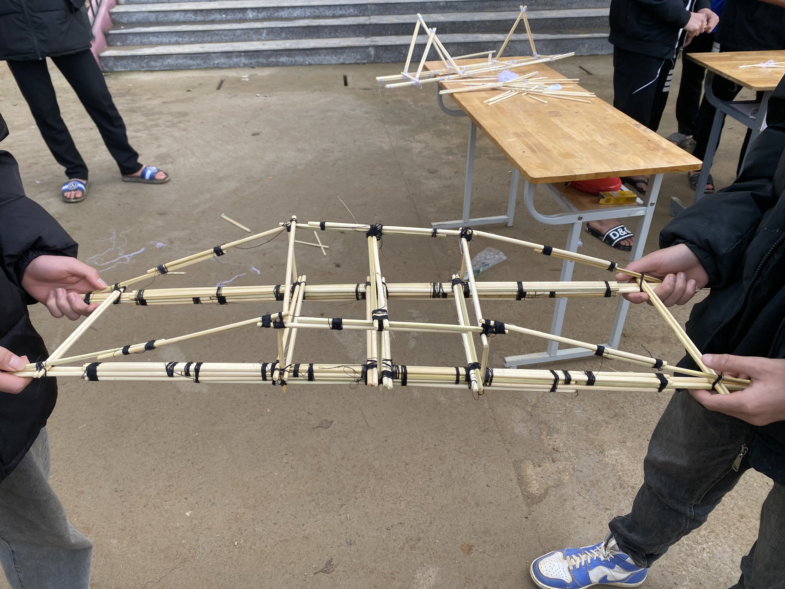

🌉 Cầu Kết Cấu Tam Giác
Mô hình dựa trên tính bền vững của tam giác. Khi chịu lực, tam giác không biến dạng.
Cách hoạt động: Lực được phân bố đều qua các cạnh tam giác giúp cầu giữ độ ổn định cao.

📊 Bảng Đồ Thị Hàm Số
Trình bày các dạng đồ thị quan trọng như hàm bậc nhất, bậc hai.
Cách hoạt động: Thay đổi hệ số sẽ làm đồ thị thay đổi hình dạng, giúp hiểu rõ vai trò của tham số.

🔺 Mô Hình Hình Học Không Gian
Bao gồm hình lập phương, hình chóp và hình trụ.
Cách hoạt động: Quan sát trực tiếp số mặt, số cạnh và áp dụng công thức tính thể tích.

🎲 Bộ Thực Hành Xác Suất
Bộ xúc xắc dùng để minh họa xác suất thực nghiệm.
Cách hoạt động: Gieo nhiều lần, ghi kết quả và so sánh với xác suất lý thuyết.